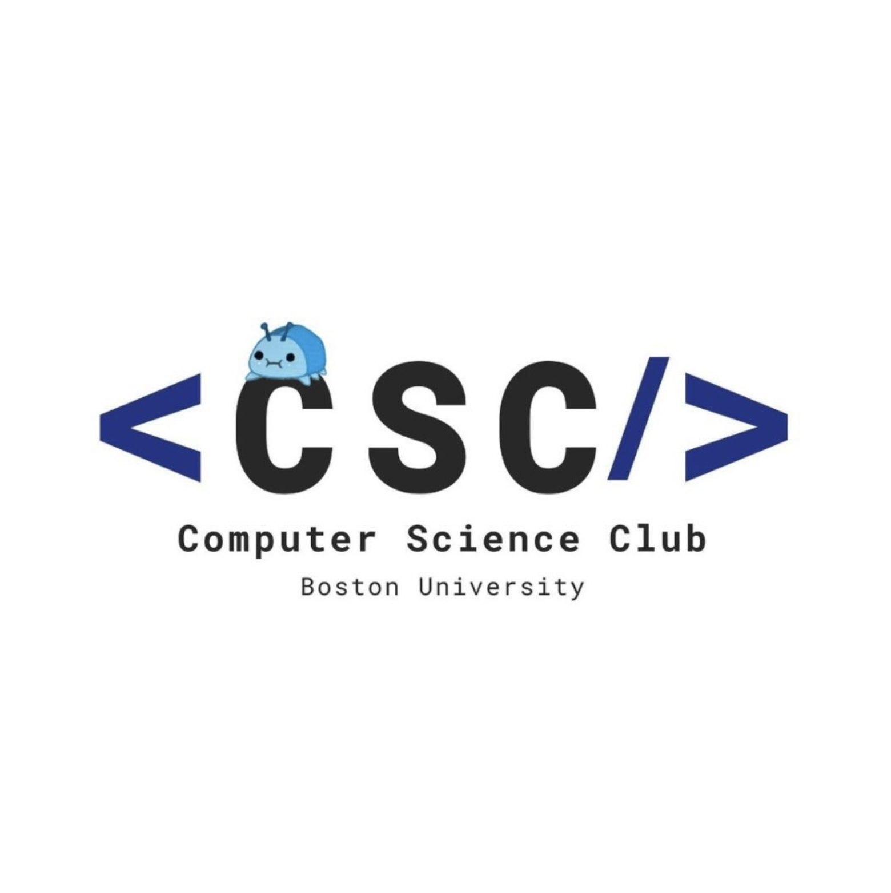
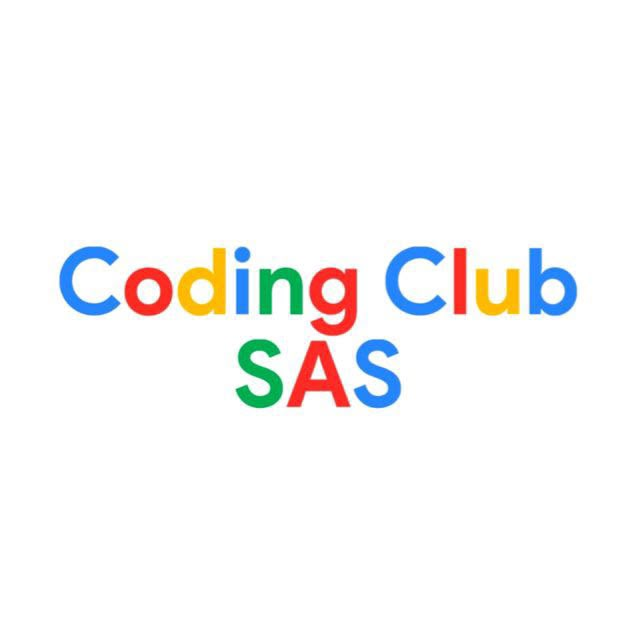

Activities

Mark Cuban Foundation AI Bootcamp: Earned a certification from an intensive program in artificial intelligence and machine learning. Developed computer-assisted solutions to complex data problems. Gained hands-on experience with AI concepts and real-world applications.

Computer Science Club (Boston University): Active member participating in programming-related activities to expand knowledge across computer science topics. Engage in collaborative problem-solving and technical discussions.

Coding Club (School for Advanced Studies): Designed and developed programming problems to help new members learn coding. Collaborated with peers to support beginner learning and engagement.